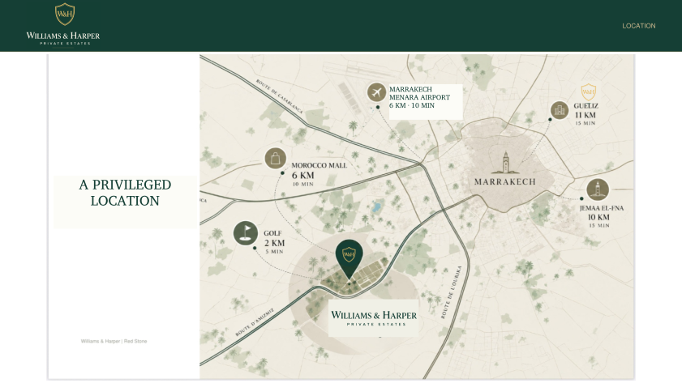

Residents’ gym
A space for fitness and wellbeing, opening onto the estate’s gardens.
In Marrakech, Domaine Red Stone brings together 41 private villas on an 8.9-hectare estate. Gardens, pools and contemporary architecture create a way of life open to the outdoors.
Discover the project
A landscaped park of over 4,000 m² complements the villas’ private gardens. A shared space to spend time with family, enjoy the outdoors and give nature a generous place at the heart of Domaine Red Stone.
Explore the leisure spaces →The visuals presented on this website are provided for illustrative purposes only and are non-contractual.

Discover Domaine Red Stone and its more than 4,000 m² of green spaces.
Enlarge the planThe visuals presented on this website are provided for illustrative purposes only and are non-contractual.

Estate masterplan: the Chloé, Céline and Margaux collections, shared services and the padel–children’s park area. The original masterplan is preserved.
The visuals presented on this website are provided for illustrative purposes only and are non-contractual.
A place of your own, with Marrakech on the horizon. Find Domaine Red Stone on our map.

Location: Domaine Red Stone, Route d’Amizmiz, km 7, Marrakech. The Williams & Harper marker identifies the estate.
Domaine Red Stone · Route d’Amizmiz, km 7 · Select the map to enlarge it. · The visuals presented on this website are provided for illustrative purposes only and are non-contractual.
Spaces and services planned for enjoying the estate, sharing family moments and taking time for yourself.
A single-storey estate clubhouse brings together Red Coffee and its spacious terrace, the concierge, dry cleaning, the convenience store and the gym. At the rear, landscaped parking welcomes residents on the padel side.


Illustrative architectural proposals, non-contractual. Select an image to enlarge it. · The visuals presented on this website are provided for illustrative purposes only and are non-contractual.


The visuals presented on this website are provided for illustrative purposes only and are non-contractual.
A space for fitness and wellbeing, opening onto the estate’s gardens.

Two courts follow one another lengthways. Beyond them, on the same axis, the large children’s park completes this leisure area.

Continuing directly beyond the two padel courts, the landscaped park features slides, swings and play structures for children.
The visuals presented on this website are provided for illustrative purposes only and are non-contractual.

A café at the heart of the estate, to meet, enjoy a break and keep the conversation going.

A convenient local service to care for your clothes and simplify everyday life.

Everyday essentials just a short walk away, in a welcoming neighbourhood shop.
The visuals presented on this website are provided for illustrative purposes only and are non-contractual.
Year-round rental management from start to finish, for owners who wish to rent out their villa and enjoy their property with peace of mind.
Projection based on 292 rented nights per year, equivalent to 80% occupancy.
| Villa | Indicative nightly rate | Estimated annual gross revenue |
|---|---|---|
| Chloé | € 700 | € 204,400 |
| Céline | € 900 | € 262,800 |
| Margaux | € 1,100 | € 321,200 |
Gross revenue before management fees, maintenance, expenses and tax.
Enjoy your property. We take care of the rest.
* Occupancy and returns observed on our two rental villas in Marrakech. These results do not guarantee future performance at Domaine Red Stone. Rates vary by season and length of stay. Illustrative, non-contractual projection.

A point of contact within the estate to welcome residents and assist with their requests. For owners wishing to rent out their villa, the concierge service handles rental management from start to finish, all year round.

Round-the-clock security and a welcome at the estate entrance for peace of mind.
The visuals presented on this website are provided for illustrative purposes only and are non-contractual.
Spaces and services planned at Domaine Red Stone. Images are illustrative and non-contractual.
Direct download, no form required.